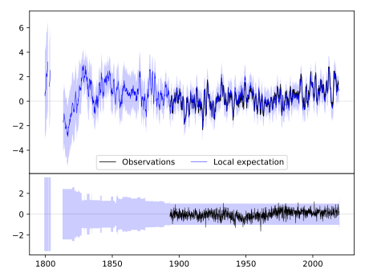
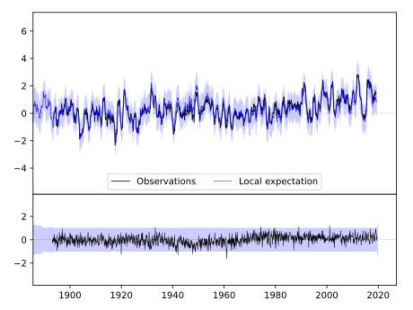
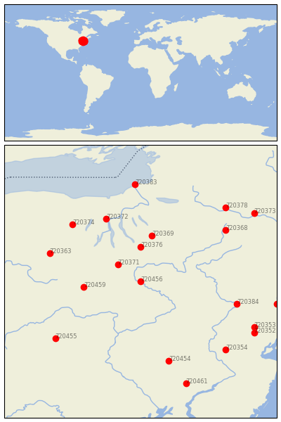

TOWANDA 1 S [USA]


| Neighbour | Name | Country | Distance | Lon/Lat | Years |
|---|
| 720456 | TOWANDA 1 S | USA | 0 | -76.4, 41.8 | 1893-2019 |
| 720371 | ELMIRA | USA | 46 | -76.8, 42.1 | 1852-2019 |
| 720376 | ITHACA CORNELL UNIV | USA | 66 | -76.4, 42.4 | 1827-2019 |
| 720459 | WELLSBORO 4 SW | USA | 83 | -77.4, 41.7 | 1893-2019 |
| 720369 | CORTLAND | USA | 90 | -76.2, 42.6 | 1892-2019 |
| 720372 | GENEVA RSCH FARM | USA | 131 | -77.0, 42.9 | 1852-2019 |
| 720363 | ANGELICA | USA | 143 | -78.0, 42.3 | 1854-2019 |
| 720384 | PORT JERVIS | USA | 148 | -74.7, 41.4 | 1880-2019 |
| 720374 | HEMLOCK | USA | 148 | -77.6, 42.8 | 1893-2019 |
| 720368 | COOPERSTOWN | USA | 158 | -74.9, 42.7 | 1854-2019 |
| 720454 | READING 4 NNW | USA | 161 | -75.9, 40.4 | 1888-2019 |
| 720455 | STATE COLLEGE | USA | 167 | -77.9, 40.8 | 1882-2019 |
| 720354 | FLEMINGTON 5 NNW | USA | 183 | -74.9, 40.6 | 1887-2019 |
| 720353 | CHARLOTTEBURG RSVR | USA | 189 | -74.4, 41.0 | 1890-2019 |
| 720383 | OSWEGO EAST | USA | 189 | -76.5, 43.5 | 1844-2019 |
| 720378 | LITTLE FALLS CITY RS | USA | 189 | -74.9, 43.1 | 1892-2019 |
| 720352 | BOONTON 1 SE | USA | 194 | -74.4, 40.9 | 1876-2019 |
| 720387 | WEST POINT | USA | 204 | -74.0, 41.4 | 1824-2019 |
| 720461 | WEST CHESTER 2 NW | USA | 211 | -75.6, 40.0 | 1843-2019 |
| 720373 | GLOVERSVILLE | USA | 211 | -74.4, 43.0 | 1892-2019 |